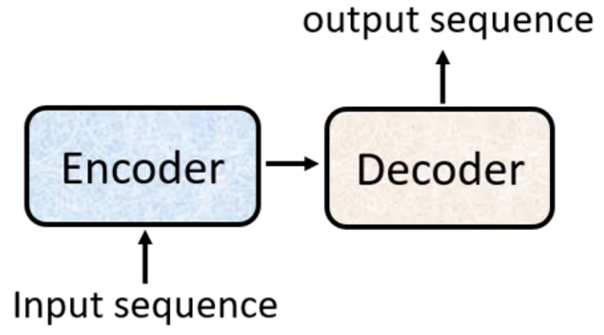
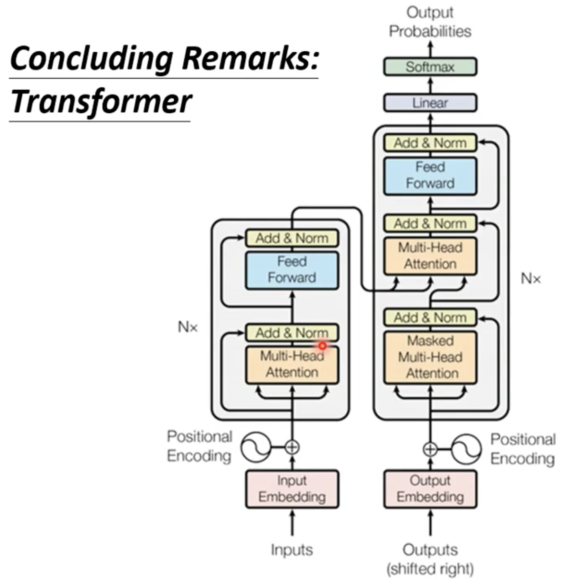

机器学习 by 李宏毅(6)
Tranformer
本质上是 sequence-to-sequence 的 model
sequence2sequence：Input a sequence, output a sequence (The output length is determined by model)
- Application
- 语音识别
- 机器翻译
- 语音翻译 （某些语言没有文字）
-
- E.g 闽南语（Hokkien） 不能语音识别
- 语音合成（Text-to-Speech Synthesis）
- 聊天机器人（chatbot）
- Natural Language Processing （NLP)
- seq2seq 在NLP领域应用广泛，很多NLP任务可以看做 Question Answering (QA)，让机器读一段文字，然后输入Q，输出A
- 为不同的任务构建特定模型效果会更好
- syntactic parsing 语法解析
- Input：sequence output：tree （看做是 sequence）
- multi-label Classification （相同的事物可以属于多个class）：E.g 文章分类，一篇文章可能属于多种类别，不能用 Multi-Class Classification 的问题解决，文章对应的 class 数目不确定，所以使用 seq2seq model， 输出的class数目由model决定
- Object Detection
Sequence-to-Sequence model
一般的 Seq2seq model 分为Encoder and Decoder 两部分

Encoder
Task：输入一排向量，输出一排向量
Model：you can use RNN，CNN，self-attention，fulliy-connected
Transformer 中使用 Self-attention 作为Encoder，Positional Encoding 加入了位置信息
Encoder 可以分为多个block的堆叠，每一个 Block 包括多个layer ，如图所示为Transformer的结构
在Transformer中，self-attention layer 使用residual connection实现，然后将输出进行 layer normalization，即对同一个 feature 的不同的 dimension 计算 mean 和 standard deviation 进行normalize （不同于 batch normalization，对不同 feature 的同一个 dimension normalize）
Self-attention Normalize 之后的结果作为 fully-connected 的输入，同样进行 residual 的操作，和 layer normalization 得到的结果就是一个 block的输出
Decoder
Autoregtressive （E.g 语音识别）
读入Encoder 的输出， Decoder 产生语音识别的结果，让Decoder 产生一段文字，需要设置一个特殊的开始符号 BEGIN OF Sentence （BOS），可以用 One-hot 方法向量化。
Decoder 输出一个向量，长度等于 Vocabulary的长度。经过 Softmax 得到的 Vector 为distribution，Vector 中的 argmax 对应的字为最终的输出 \(y_i\)
将输出 \(y_1\)的 one-hot Vector 作为Decoder的下一个输入，得到输出 \(y_{i+1}\)。转上一步直到最后一个输出，也就是Decoder 的输入是上一个时间点的输出
若一个输出错误，可能会导致接下来的输出全部错误，即Error Propagation问题
Transformer 中的decoder如图
Encoder 和Decoder 的主要差别在于 Masked Multi-head Attention ，Self-Attention 产生b时不能考虑右侧的输入
Why？直觉上，\(a^1\) -> \(a^4\) 存在先后次序，所以不考虑未输入
为了使 Decoder 不会永远输出下去，需要一个 END 字符表示终止
Non-autoregressive （NAT)
不是一次产生一个字，而是产生整个句子，输入为一列 BEGIN TOKEN
- 如何确定输出的长度？
- 另外训练 classifier，输入是Encoder的输出，输出是NAT的 output 的长度
- or 输入足够长的BEGIN，忽略输出中 END 之后的字
- NAT 平行化输出，速度更快
- 可以控制输出的长度，classifier
- 但是performance 往往不如 AT Decoder
The Connection between Encoder and Decoder
Cross Attention，链接 Encoder 和 Decoder，Encoder 两个输入，Decoder 一个输入
Encoder Input：K，V
Decoder Input：q
Docoder 输出经过 linear transform 得到 q
Decoder 为 auto-regressive ，每输出一个都经过如上运算，将值输出的 FC 中
各类 Cross Attention
Training
以 语音识别 为例，需要的训练数据：声音信号 + 对应的文字 label
Ground Truth： One-hot encoding Output：distribution
计算 GT 与 Output 之间的 CrossEntropy 并 minimize
Teacher Forcing：using ground truth as input
每一个汉字都是一个 one-hot vector，因此分别计算每个输出的 loss 再平均
Tips in training seq2seq model
Copy Mechanism
在特定的情况下，Decoder 需要从输入中复制一些信息，而不是完全由 decoder 创造
Chat-Bot （ E.g：decoder 在训练中不会包含所有人名，所以需要从输入中提取 ）
- User：Hi，XXX
- Bot：Hello XXX，nice to meet u
Summarization：从文章中摘出句子组成一个摘要
Guide Attention
语音合成，产生丢失一个字符的情况。在一些任务中，输入和输出是单调一致的，例如，语音识别、TTS等。
红色曲线代表Attention分数，越高分数越大，语音合成输入是文字，模型应该从左向右产生声音。
但实际上的Attention是乱序的
Guide Attention 迫使 Attention 有固定顺序或形式
- Monotonic Attention
- Location-aware Attention
Beam Search
假设 Decoder 只产生 2 个字 A and B。在第一个 Time Step,它在 A B 里面决定一个 distribution 最大输出, 然后决定了 A 以后, 再把 A 当做输入, 然后再决定 A B 要选哪一个，每次选择分数最高的结果作为输出得到的路径就是 Greedy Decoding，但是也有可能存在其他更好的输出，但是不可能暴力计算最好的值
Beam Search 就是一种估测最好路径的算法
问题：如果用 Beam Search , 会发现机器不断输出重复的话，它不断开始陷入无穷重复的话，如果不是用 Beam Search, 而是有加一些随机性, 虽然结果不完全好, 但是看起来至少是比较正常的句子, 所以有时候对 Decorder 来说,没有找出分数最高的路, 反而结果是比较好的
看任务的本身的特性
假设一个任务,答案非常地明确
比如说语音识别, 说一句话识别的结果只有一个可能, 有唯一可能的正确答案。对这种任务而言,通常 Beam Search 就会比较有用
需要机器发挥创造力的时候,这时候 Beam Search 作用不大
例如 Sentence Completion, 给定故事的前半部, 后半部有无穷多可能的发展方式, 这种需要有一些创造力的,有不是只有一个答案的任务,往往需要在 Decoder 中加入随机性,
例如 语音合成 TTS, 也非常需要随机性的任务
Optimizing Evaluation Metrics
评估标注：BLEU Score，Decoder 先产生一个完整的句子以后,再去跟正确的答案一整句做比较, 即是拿两个句子之间做比较
训练的时候,每一个词汇是分开考虑的,训练的时候 Minimize Cross Entropy
所以 Minimize Cross Entropy 不一定能 Maxize BLEU Score，因为 BLEU Score 本身很复杂,不能微分的，所以不能作为训练的Loss 进行 Optimization
在不能 optimize 时，可以尝试 Reinforce Learing 强行Train一发，把无法 Optimize 的 Loss Function 当做是 RL 的 Reward, 把 Decoder 当做是 Agent。
Scheduled Sampling
训练跟测试是不一致，测试的时候, Decoder 看到的是自己的输出, 所以测试的时候, Decoder 会看到一些错误的东西。但是在训练的时候, Decoder 看到的是完全正确的, 那这个不一致的现象叫做, Exposure Bias
假设 Decoder 在训练的时候, 永远只看过正确的data, 那在测试的时候, 就会一步错 步步错, 因为对 Decoder 来说,它从来没有看过错的东西, 所以Decoder 没有纠错能力。
Scheduled Sampling：给 Decoder 的输入加一些错误的东西, 但是 Scheduled Sampling 其实会伤害 Transformer 的平行化能力
结构
